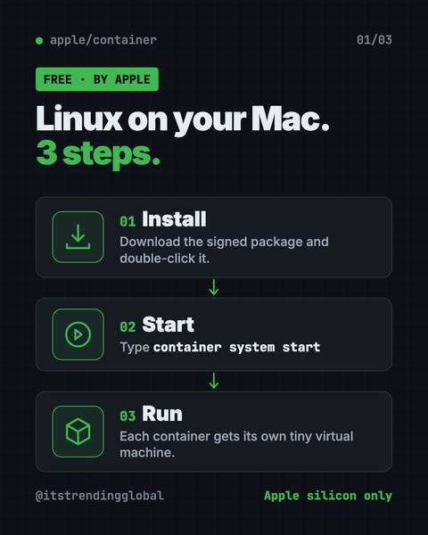
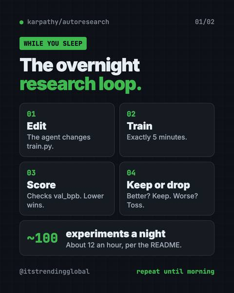
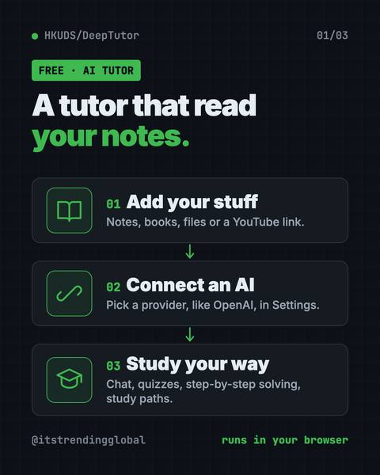

GitHub stars
As listed in each guide when we last checked
Home › Free AI tools › For students
Free, open-source AI tools from GitHub that fit students, explained simply.
11 free, open-source tools picked for students. Newest: Tolaria: A Free Offline Notes App You Fully Own (2026). Most GitHub stars: Graphify Knowledge Graph (126.8K).
These free tools help you study, take notes and learn new skills without paying for another app. There is an AI tutor that builds quizzes and study plans from your own notes, a free NotebookLM alternative that answers with citations, offline voice typing for notes and essays, and a notes app where your files stay yours after you graduate. If you are learning to code, a few tools turn a big codebase into a clickable map you can explore, or let you run Linux on a Mac. There is even an offline library with Wikipedia and Khan Academy lessons that works with no internet. Every guide uses plain words and copy-paste steps.
Newest first. Each card opens the full guide.

Tolaria is a free offline notes app for Mac, Windows and Linux.

OfficeCLI is free AI for Word, Excel and PowerPoint.

Archify is a free AI diagram generator.

Apple Container is Apple's free tool to run Linux containers on Mac.

Open Notebook is a free NotebookLM alternative you run yourself.

Understand Anything is a free plugin that lets you visualize any codebase as a clickable map with plain-English notes, guided tours and a chat for questions.

A graphify knowledge graph turns your code, docs, PDFs and videos into one clickable map, so your AI helper looks things up instead of guessing.

Karpathy autoresearch lets an AI agent tweak, train and test a tiny AI model on its own overnight, keeping only the changes that make it better.

Project NOMAD is a free offline knowledge server with Wikipedia, medical guides, Khan Academy courses, maps and a local AI that work with no internet.

Handy is a free offline voice typing app.

DeepTutor is a free AI tutor that answers questions, makes quizzes and builds study plans from your own notes, books and videos.
Stars are a rough sign of how many people find a tool useful.
The same guides, sorted by who they fit.
All 11 tools here are open source on GitHub. By license: Apache-2.0 (5), MIT (5), AGPL-3.0 (1). A tool can be free while an AI service it connects to is not, so check the price row in each guide's at-a-glance table.
Graphify Knowledge Graph, with 126.8K stars when our guide last checked (2026-10-16).
8 of the 11 guides that list platforms say Mac, Windows and Linux. Each guide's at-a-glance table names the platforms for that tool.
Tolaria: A Free Offline Notes App You Fully Own (2026), published 2026-10-15.